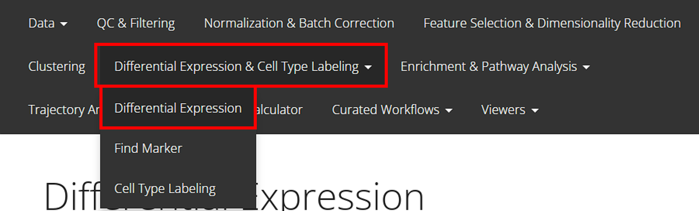
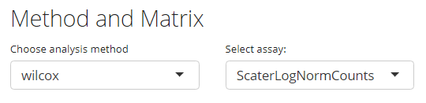
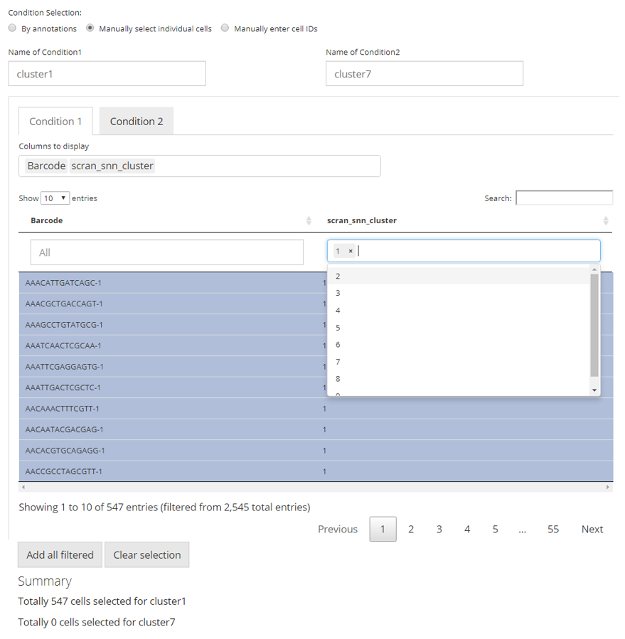
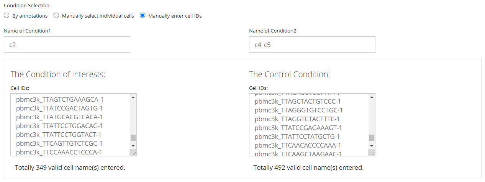
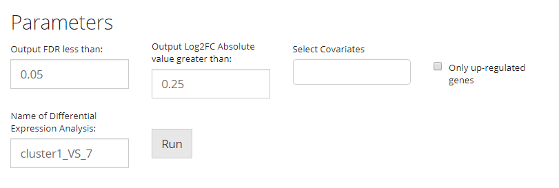
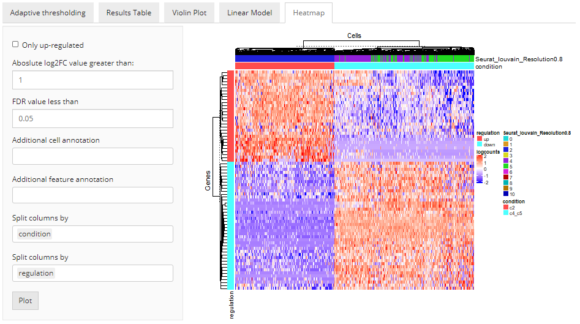
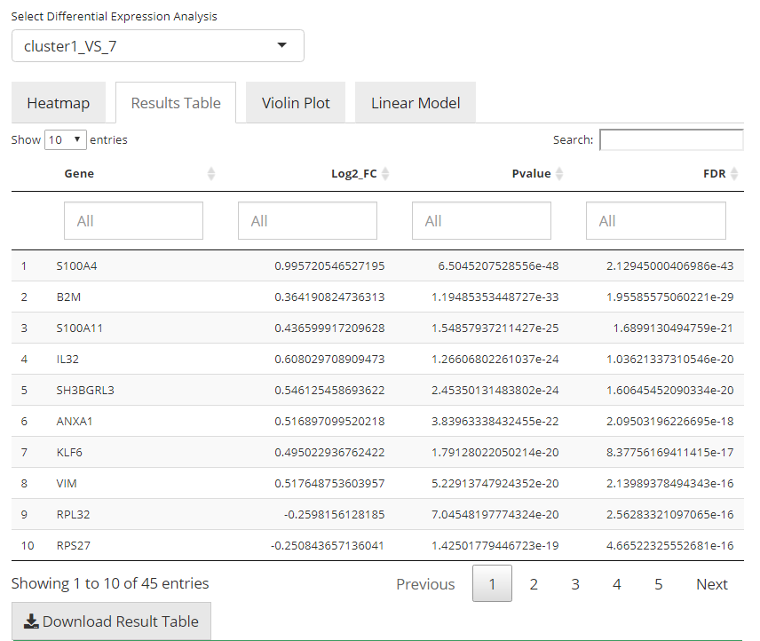
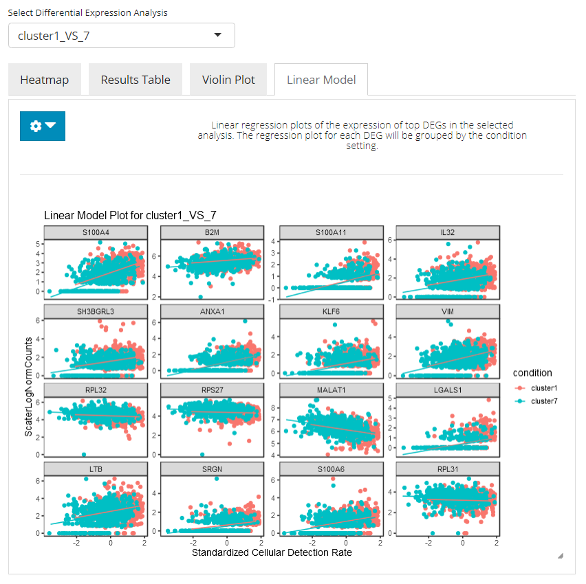

Differential Expression
Yichen Wang
Source:vignettes/articles/differential_expression.Rmd
differential_expression.RmdIntroduction
singleCellTK (SCTK) performs differential expression (DE) analysis in a group-VS-group way. The groups to be compared can be set by selecting the individual cells or by using existing categorical cell annotation. SCTK supports five methods, including wilcoxon test [1], MAST [2], Limma [3], DESeq2 [4], and ANOVA[5]. Users can perform multiple sets of DE analysis with unique analysis name set each time.
To view detailed instructions on how to use these methods, please select ‘Interactive Analysis’ for using differential expression in shiny application or ‘Console Analysis’ for using these methods on R console from the tabs below:
Workflow Guide
Entry of the Panel
From anywhere of the UI, the panel for DE can be accessed from the top navigation panel shown below (highlighted in red):

The UI is constructed with mainly five parts:
1. Method Selection, 2. Assay Input, 3. Condition Selection, 4. Parameter Settings 5. Results & Visualization
1. Method Selection
As mentioned in the Introduction section above, totally five methods are available from SCTK UI, including: Wilcoxon, MAST, Limma, DESeq2 and ANOVA. Users can choose the preferred one from the selection input “Choose analysis method”, as shown in the screenshot below.

2. Assay Input
Users need to choose a feature expression matrix for the differential expression analysis, and the selection should be made at the selection input “Select assay”. For most of the methods, a log-normalized assay would be recommended for the algorithm, though a “raw” counts would be recommended for “DESeq2.” (How to normalize an assay?)
Alternatively, user can choose to use the Pathway Analysis scores to perform the statistic tests. The matrix names for these scores will lie within the “redDims” section in the drop-down list of “Select assay”. When using the pathway analysis scores, DESeq2 method is not available since it expects non-negative integer value in the input matrix.
3. Condition Selection
Usually in terms of a DE analysis, we have two necessary conditions that have to be defined. One is the condition of interests and the other one is the condition of control. The condition of interests will then be compared to the condition of control via computational methods and statistical result will then be returned. The selection for a condition here means deciding which cells should be grouped together as one condition.
SCTK provides reasonably flexible approaches to setting the conditions:
Categorical Selection
The first approach is designed for the fastest use, where conditions of interests and of control can be simply defined by categorical variables of the same class in the cell annotation (i.e. within one single column in colData of the background SCE object).

First, users need to choose one single option from the selection list “Choose Annotation Class”. Then, in the UI, there will be two columns for each condition. For each of them, users can make selections for which categories should belong to the condition, at the selection input “Select Condition(s)”. One or more selections are acceptable. When selections are made for one condition while no selection for the other, all the categories but those already used for the former will go to the latter. The text boxes, “Cells selected”, are only for showing users what are selected. While the text span below the boxes summaries the total number of cells selected.
In the example in the figure shown above, we intend to define the conditions based on the clustering result generated by louvain clustering on an SNN graph prepared by Scran, "scran_snn_cluster". (How to cluster cells?) Then we define that the cells assigned to “cluster 1” are of our interests, while the cells assigned to “cluster 7” should be a control against “cluster 1.”
Data Table Filtering Selection
The second approach allows users to make the most use of all the cell annotations available. Meanwhile, single selection on each cell is also enabled to ensure the highest flexibility, though can be relatively ineffective.

In this approach, we utilize a data table, where filters can be applied, for the flexible definition on each condition. By default, all classes of annotations are displayed. In the selection input “Columns to display”, users can select one or more variables of annotation, which should be displayed and used for filtering. The blank box under each column title is where the filters are applied. For categorical columns, one or more selections on available variables can be made; for numeric columns (with continuous values), value range can be set. All filters applied are not technically making any selection on cells, but adjusting which cells to display in the table. This can be inferred from the first text span summary below the table area. After users applied all necessary filters, click on “Add all filtered” button below the table area to technically make the selection. Meanwhile, each row in the table is clickable to make a single selection/cancellation on cells.
Similarly as the first approach, in the figure, we are making an equivalent condition definition.
Select by Pasting a List
The final way allows users without any useful annotation but still know which cells are of interests. It is done by just simply pasting a list of cell identifiers into the text box for each condition. Note that the cell identifiers used must be the default cell IDs in the background SCE object (i.e. colnames). The input text should be formatted by one ID per line, split with no symbol. A summary text span below each text box will be dynamically updated after pasting, for the number of valid IDs found in the input.

NOTE that the “Name of Condition” fields are always required. It is highly recommended that users put easily understandable names there, in order to avoid the confusion when multiple sets of analyses are performed, and to keep the automatic legends on DE specific plots clean as well.
4. Parameter Settings

- Covariate. At the selection input “Select Covariates”. A covariate is another set of categorization on the cells involved in the analysis, used for modeling. Multiple selections are acceptable.
- FDR cutoff. At the numeric input “Output FDR less than”. As the label indicates, the cutoff set here will rule out DE genes with FDR (false discovery rate) value more than the cutoff from the result.
- Log2FC cutoff. At the numeric input “Output Log2FC Absolute value greater than”. As the label indicates, the cutoff set here will rule out DE genes with absolute value of Log2FC (logged fold change) smaller than the cutoff from the result.
- Whether only up-regulation. At the checkbox input “Only up-regulated genes”. By checking this option, only DE genes with positive log2FC value will remain in the result. And in the DE analysis within SCTK, “up-regulation” will always mean a positive log2FC tested from the condition of interests against the condition of control.
- Cutoff for mean expression. At the numeric input “Output Group1 mean expression greater than” and “Output Group2 mean expression less than”. Only output genes with mean expression value in Group1 greater than the former, and that in Group2 less than the latter.
- Cutoff for percentage of cell expression. At the numeric input “Output Group1 expression percentage greater than” and “Output Group2 expression percentage less than”. Only output genes that are expressed in greater than the former fraction of cells in Group1, and genes expressed in less than the latter fraction of cells in Group2.
- Name of an analysis. At the text input “Name of Differential Expression Analysis:”. This is a required field for all DE analysis. Similarly to the naming of each condition, when performing batches of analysis, users will need unique identifiers to recognize each set of result, and to avoid confusion in downstream analysis.
5. Results & Visualization
Heatmap

This tab enables a heatmap visualization for the DE analysis selected. Here SCTK will automatically group the involved cells to the two conditions where they are assigned to, and group the genes by the log2FC values, which indicate whether a gene is up-regulated or down-regulated. Additional settings can be applied by clicking on the blue settings (cog) button.
DE Heatmap Additional Parameters
- Do log-normalization on the assay used for calculation (when “DESeq2” method is used) by selecting the check-box input “Do log transformation”.
- Keep only the up-regulated genes (by excluding the DE genes with negative log2FC values) by selecting the check-box input “Only up-regulated”.
- Further filtering by the statistics can be applied through numeric inputs “Absolute log2FC value greater than” and “FDR value less than”.
- Further filtering by the mean expression can be applied through numeric inputs “Group1 mean expression greater than” and “Group2 mean expression less than”.
- Further filtering by the expression percentage per group can be applied through numeric inputs “Group1 expression percentage greater than” and “Group2 expression percentage less than”.
- Additional labeling can be added from background by multi-selection inputs “Additional cell annotation” and “Additional feature annotation”.
- The heatmap is by default split by the grouping “condition” and “regulation,” mentioned above. And this can only be achieved by selecting these two option in the multi-selection inputs “Split columns by” and “Split rows by”, respectively. Technically, these options can be canceled while other options can also be added, as long as users wish.
Furthermore, if more sophisticated settings on the DE heatmap are needed, users can move to the generic heatmap viewer and make use of the “import from analysis” functionality.
Gene Table

In this tab, there will be a table with all the genes that are thought to be differentially expressed in the condition of interest against the condition of control, with high significance and passed all filter parameters. The gene names (default identifier in the background object, not necessarily a gene symbol), p-values, log2FC values, and FDR values will be present. The table will be saved in background by the name of the analysis, entered before running. Users can also download the table in comma separated value (CSV) format, by clicking “Download Result Table” button.
Violin Plot

In the violin plot tab, the UI will present a standard violin plot showing how expression differs in the top N selected genes between cells in both conditions. Users can set the number of top DEG to plot and the feature identifier type to display, by clicking on the blue settings (cog) button.
Linear Modeling Plot

In the linear modeling plot tab, an analysis of covariance (ANCOVA) is done, showing how expression differs in the top N selected genes between cells in both conditions. Users can set the number of top DEG to plot and the feature identifier type to display, by clicking on the blue settings (cog) button.
The differential expression analysis can be easily performed on any preprocessed SCE dataset. Here we introduce the workflow of using the generic wrapper runDEAnalysis().
Basic Parameters:
The most basic parameters include:
- The input SCE object -
inSCE. - The method listed in the table above to use -
method. - The assay to perform the analysis on -
useAssay- Alternatively, set
useAssaytoNULLand useuseReducedDimfor specifying a matrix inreducedDims, such as the Pathway Analysis scores. When using the pathway analysis scores,"DESeq2"method is not available since it expects non-negative integer value in the input matrix.
- Alternatively, set
Additional Required Parameters:
1. Conditions
The R script functions we have allow users to perform differential expression analysis with relatively flexible condition setting. In terms of the condition of interests and the condition for control, comparison groups can be set by giving either one or more categories under a column in colData, or a prepared index vector as long as the indices are able to subset the input SCE object.
Additionally, only specifying the condition of interests is allowed and the control will then be set to all the other cells, which turns to a biomarker finding analysis.
Since the conditions can be set by using indices or annotations, we have two groups of parameters listed below. Note that only one way of setting can be used at one time.
- Use
index1andindex2for index style setting - Use
classto specify the annotation vector by either directly giving a vector of proper length or giving a column name ofcolData. Then useclassGroup1,classGroup2to specify which categories inclassare of interests.
2. Namings
Something that might be special in our workflow is that, users will be required to specify name strings for:
- The group of interests -
groupName1. - The group of control -
groupName2. - The analysis run itself -
analysisName.
The reason is we assume that users are likely to perform multiple batches of analysis for a single dataset (e.g. group1 Vs. group2 and then group1 Vs. group3), and we hope to have everything stored in one SCE without leaving users any confusion when they look back on it. Also, the namings are also used by DE analysis related plotting functions, so that legends can be well annotated.
Example
To demonstrate a simple and clear example, here we use the “PBMC-3k” dataset from “10X” which can be easily imported with SCTK functions.
Preprocessing
The preprocessing only includes necessary steps to get cluster labels (i.e. QC and filtering are excluded), via using SCTK’s Seurat Curated Workflow.
library(singleCellTK)
sce <- importExampleData("pbmc3k")
sce <- scaterlogNormCounts(sce, "logcounts")
# Go through the Seurat curated workflow to get basic clusters
sce <- runSeuratNormalizeData(inSCE = sce, useAssay = "counts")
sce <- runSeuratFindHVG(inSCE = sce, useAssay = "seuratNormData")
sce <- runSeuratScaleData(inSCE = sce, useAssay = "seuratNormData")
sce <- runSeuratPCA(inSCE = sce, useAssay = "seuratScaledData")
sce <- runSeuratFindClusters(inSCE = sce, useAssay = "seuratScaledData")
# Optional visualization
sce <- runSeuratUMAP(sce)
plotSCEDimReduceColData(inSCE = sce,
colorBy = "Seurat_louvain_Resolution0.8",
conditionClass = "factor",
reducedDimName = "seuratUMAP")
# Condition chosen basing on the UMAP
sce <- runDEAnalysis(inSCE = sce, method = "MAST", useAssay = "logcounts",
class = "Seurat_louvain_Resolution0.8", classGroup1 = c(2), classGroup2 = c(4, 5),
groupName1 = "c2", groupName2 = "c4_c5", analysisName = "c2_VS_c4_c5")Results
The results are saved in the metadata slot of the returned SCE object
Result list structure
matadata(sce)
|- $info1
|- $info2
|- ...
|- $diffExp
|-$AnalysisName1
|-$AnalysisName2
|-...
|-$c2_VS_c4_c5
|-$useAssay = "logcounts"
|-$groupNames = c("c2", "c4_c5")
|-$select
| |-$ix1 = c(FALSE, TRUE, FALSE, ...)
| |-$ix2 = c(FALSE, FALSE, FALSE, ...)
|
| (Two logical vectors both having `ncol(inSCE)` values,
| specifies which cells are selected for "c2" or "c3_c8")
|
|-$annotation = "Seurat_louvain_Resolution0.8"
|-$result = (the `data.frame` of top DEG table)
|-$method = "MAST"To fetch the result as a table of the Top differential expressed genes and the statistics:
DEG <- metadata(sce)$diffExp$c2_VS_c4_c5$result
head(DEG)To visualize the result in a heatmap:
plotDEGHeatmap(sce, useResult = "c2_VS_c4_c5", log2fcThreshold = 1)To visualize the result in a volcano plot:
plotDEGVolcano(sce, useResult = "c2_VS_c4_c5")For other approaches of visualizing top differential expressed genes, refer to plotDEGRegression() and plotDEGViolin(), which are borrowed from MAST’s tutorial.